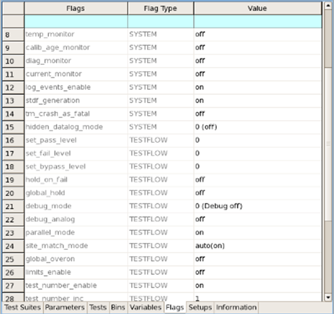

Testflow flags
- In Test Program Explorer, right-click the testflow name and select .
The flow data editor opens, which collects all kinds of testflow associated data and categorizes them into different tabs.
- Choose the Flags tab, you will see all flags, including system flags
and testflow flags.

- On this tab, you can edit flag values as desired. For optimized throughput, we recommend you
use the following testflow flag settings:
- set_fail_level: off
- set_bypass_level: off
- hold_on_fail: off
- global_hold: off
- debug_mode: off
Note that HSM test methods produce output in the report window only with in debug_mode 2. (Errors and warnings are always output, irrespective of the debug mode.)
- debug_analog: off
- parallel_mode: on
- site_match_mode: off
- global_overon:on
- limits-enable: off
- test_number_enable: on
- test_number_inc: 1
- log_cycles_before: off
- log_cycles_after: off
- unburst_mode: off
- sqst_mode: off
- warn_as_fail: off
- rf_dembedCal_enable: off
- use_hw_dsp: off
- dp_file_enable: off
- buffer_testflow_log: off
- check_testmethod_api: off
- multibin_modeNote You can change testflow flag settings for the production purpose by setting up Data Logging Profiles. This allows the testflow to have multiple testflow flag settings for different usages without the modification of the original setup.
Functional changes
- Introduced before SmarTest 6.3.2
- MTP 3.0.1: Changed the recommended testflow flag settings
- MTP 3.1.0: Testflow optimization function removed
- MTP 3.2.0: Removed test_number_manager flag
- MTP 3.2.0: Removed test_num_col_offset flag
- SmarTest 7.2.2: Patch1 - New testflow flag multibin_mode